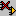

Replacing Component Symbols
The Replace Component command lets you (1) select a different symbol to be displayed for the same instantiated component, or (2) instantiate an entirely different component. To do so —
- If you want any port pins which have been renamed to retain their original positions, select the “Retain pin location during Update/Replace” checkbox in the Tools > Options > Setup dialog box.
- Click the Replace Component command icon:

or, in the right-mouse-button, select Replace Component.
A pane with Library, Unit, and Symbol lists appears, similar to the one used for the Get Component command (see "Instantiating a Component"), but with a Replace button instead of the Get button.
- Click the component instance(s) whose symbol(s) you want to replace.
- Using the pane described above, specify the symbol that is to replace the one you selected. Be sure that you specify the correct library and unit, as well as symbol.
- Click the Replace button.
- If you want to replace more symbols, repeat steps 3 through 5 as necessary. You do not need to reselect the Replace Component command icon.
- Click Replace Component again to hide the symbol list pane.